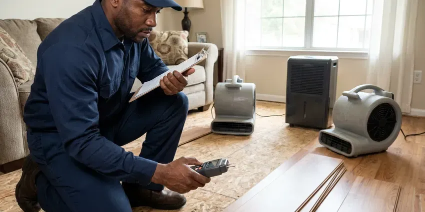

Emergency Plumber in Asheville, NC
HFN Plumbing keeps emergency plumbers on call across Asheville, NC, with a dispatcher who stays on the line.
- Nights and Weekends
- Workmanship Warranty in Writing
- Licensed North Carolina Plumbers
- Gas Line Certified

Backup or Burst Pipe in Asheville, NC?
Sewage backups and active leaks go first in the dispatch queue.
Emergency Plumber in Asheville, NC
HFN Plumbing handles plumbing emergencies around the clock in Asheville, including burst supply lines, slab leaks, sewer backups and leaking water heaters. A suspected gas leak gets the same fast response. Shutting off the water or making the area safe is always step one, before anyone talks about repairs.
Work we handle every week:
- No-hot-water diagnosis on tank and tankless units
- Burst pipe repair and replacement
- Water heater leaks and failures

Additional Plumbing Maintenance Services in Asheville, NC
Our maintenance and specialty plumbing services in Asheville, NC catch small problems before they become emergencies.


Customers
Why Choose HFN Plumbing for Emergency Plumber in Asheville, NC?
Our plumbers have spent years on service calls, so they recognize a failed pressure regulator or a split PEX elbow quickly. That saves time. Nothing gets torn out until they can point to the leak on a meter or a camera screen.
- Price Up Front, You hear the dispatch fee on the phone and see the repair price before work begins.
- North Carolina Licensed, Our plumbers hold licenses in North Carolina and work to the plumbing and fuel gas codes your city enforces.
- Live Answering, A dispatcher answers at any hour and helps you close the main while the truck heads out.
Citywide Coverage
Every neighborhood in Asheville has its own mix of pipe materials and cleanout locations, and our plumbers have worked in most of them. It saves time at night. Shutoffs get found faster.
Experienced Team
Each plumber on our night rotation has hundreds of service calls behind them, so a split PEX fitting or a failed regulator is familiar ground. Diagnosis comes before cutting. We train on gas testing and backflow work every year.
Safety-First Approach
Drop cloths, shoe covers and a cleaned-up work area are standard on every call, even the ones at three in the morning. Old parts leave with us. Water heaters get disposed of at a recycling facility, not left at the curb.
Trusted Certified Asheville Plumbing Services Professionals
At HFN Plumbing, we are proud to offer certified plumbing services throughout Asheville, NC. Those papers on the wall mean something. Every repair, install and maintenance visit follows strict safety and quality rules, and the plumbers doing the work carry recognized industry credentials.
Call Us Now PHCC Plumbing Contractor Recognition
PHCC Plumbing Contractor Recognition Better Business Bureau (BBB) Accreditation
Better Business Bureau (BBB) Accreditation Angi Certified Pro
Angi Certified Pro ISO 9001 Quality Management Certification
ISO 9001 Quality Management CertificationWhat We Fix After Hours in Asheville, NC
Pinhole and Fitting Leaks in Asheville
Pressure above 80 PSI puts constant stress on every joint and valve. Aggressive water can also eat pinholes in copper, which start as a mist and open into a spray. We shut the water, cut out the bad section and replace it with copper or PEX, and check static pressure at a hose bib with a gauge. Bad pressure regulators turn up often.

After-Hours Commercial Plumbing in Asheville
Every office, shop and apartment building loses money when the water stops in Asheville. We run after-hours calls for burst branches, failed commercial water heaters and backflow assemblies that dump water. Grease line clogs are a regular one. Property managers can set up an account so dispatch already has the building notes, which saves time on a 3 a.m. call.
Old Pipe Failures in Asheville
Galvanized steel rusts from the inside, so the pipe can look fine and still be paper thin. When one joint lets go, the next one is often close behind. We cut back to sound pipe, transition to copper or PEX with a dielectric fitting, and tell you honestly how much of the old system is left. Pinhole leaks in old copper get the same treatment. We mark weak spots on the invoice.
Gas Line Leak Repair in Asheville
Rotten-egg smell near the range or a hiss by the water heater means leave the house now. Do not flip switches. From the yard, call 911 or the gas utility, and call us after they say it is safe, and our certified plumber will find the leak with a combustible gas detector, replace the bad section and pressure test the line to code before any appliance gets relit.
Emergency Water Heater Repair in Asheville
No hot water at night is often a control problem, not a dead tank. On gas units, we check the thermocouple or flame sensor, the gas valve and the venting. Electric tanks get their elements and thermostats tested with a meter. We check tankless units for scale. We carry common parts for Rheem, AO Smith, Bradford White and Rinnai, so many of these get fixed before you go back to bed.
Cost of Emergency Plumbing in Asheville, NC
Clearing a toilet clog costs far less than fixing a burst pipe behind drywall. Price depends on the part that failed, how hard it is to reach and whether drywall has to come off, and those three things matter more than the hour of the call. We quote before working. Most small emergency fixes in Asheville fall in the low hundreds of dollars, with larger repairs priced on site.
Emergency Slab Leak Response in Asheville, NC
Hearing water with every fixture off is a classic slab leak sign. So is a hot spot on the floor. We isolate the hot or cold side first, which keeps some water running for the night, then locate the leak with acoustic and thermal gear. Repairs include a direct cut through the slab, a reroute through the walls or attic, or a partial repipe of that branch.

Water Heater Emergencies in Asheville
Water pooling under a tank usually means the inner liner has rusted through, which no repair can fix. A leak at the top is different. It is often a loose union, a failed flex connector or a weeping relief valve, and those are repairs we can finish the same night on Rheem, Bradford White, AO Smith and most other brands. If the tank is done, we shut it down safely and schedule a fast replacement.
Emergency Plumber Near Me in Asheville, NC
Searching for an emergency plumber near me in Asheville at night usually turns up call centers that sell your lead. HFN Plumbing dispatches our own plumbers. You talk to the company doing the work.
An emergency plumber close to home also knows the pipe you probably have. In Asheville, that might be galvanized in older blocks, copper in mid-century homes or PEX in new subdivisions, and each fails differently. Diagnosis goes faster.
HFN Plumbing at a Glance
- Licensed and insured plumbers serving Asheville, NC
- Same-day appointments and 24/7 emergency response
- Clear written estimates, no hidden fees
- 4.8-star rated by 840+ North Carolina customers
Asheville Map
Asheville Information
- Population
- 95,056
- Area codes
- 828/919/423
- Service area
- Asheville and towns within a 40 mile drive
- Nearby
- Hickory, Gastonia, Huntersville, Mooresville
Minerals in the supply wear out valves, flex connectors and tank bottoms, so pinhole leaks and failed water heaters are a big share of our night calls in Asheville, NC. A large share of homes across the state rely on private wells, and iron and manganese often leave orange or dark stains on fixtures.
Expert Services
Call HFN Plumbing for honest, reliable plumbing from people who know the trade in Asheville, NC.
Our Specialized Plumbing Services in Asheville, NC
At HFN Plumbing, you get every kind of plumbing service from one company across Asheville, NC. We go from leak detection all the way to full system installations, for homes and commercial buildings, and we do it quickly at a fair price. Explore our core services below:


What Happens When You Call Us in Asheville, NC
An emergency call with us has three parts: make it safe, find the cause, fix it right.
Call and Shut Off
Call (980) 364-4317. The dispatcher helps you close the main and confirms the emergency rate.
Plumber Dispatched
We send the closest licensed plumber to your Asheville home with a stocked truck and an arrival window.
Diagnose and Price
The plumber finds the failed part and quotes the repair before starting.
Frequently Asked Questions About Emergency Plumber in Asheville
Simple calls like a clogged toilet run about $150 to $350 during regular hours. Nights and weekends carry a dispatch fee. Bigger jobs, like a burst pipe or a sewer repair at night, may land between $500 and $2,000 or higher based on materials and access, and you get a written estimate first.
Usually not. Focus on stopping the water. Find the main shutoff, often near the front hose bib or in a meter box at the curb, and close it, then leave the actual repair to someone with the right fittings and tools.
Most emergency calls get a plumber within 60 to 90 minutes in Asheville, NC, depending on traffic and how many calls are open. Leaks that are still running get priority.
Same warranty, same paperwork. Parts also carry the manufacturer warranty, which runs anywhere from one year on a valve to six or more on a water heater tank. We do not cut corners because it is late.
Figure on 60 to 90 minutes for most addresses in Asheville, with true emergencies moved to the front. The dispatcher gives you a real window.
No. The majority of emergency work does not need a permit. Water heater swaps, gas repairs and some repipes do, and we file those with your city or county while the work gets started.
They do. HFN Plumbing puts a parts and labor warranty on every emergency repair, printed on the invoice before we leave. If the repair fails, we come back.
Anything that is damaging the house right now or makes the plumbing unusable. That includes sewage backups and burst pipes. So does a toilet that will not stop overflowing after a flush, any gas odor, or no water at all.
Hear From Customers Who Hired Our Plumbing Experts

Lisa C.
Water was pouring out from under the washing machine on a holiday weekend. HFN Plumbing talked me through closing the valves over the phone and had a plumber at the house within ninety minutes. It was a burst fill hose.
Emergency Plumbing · Hickory, NC
Brian W.
I smelled gas behind the dryer and called right away. The plumber found a corroded flex connector, replaced it, and pressure tested the whole line before turning the gas back on. He let me watch the gauge hold steady for fifteen minutes.
Gas Line Repair · Huntersville, NC
Jessica T.
We were adding a gas range in a kitchen remodel and needed a new line run from the meter. The plumber pulled the permit, ran the pipe through the crawl space, and had it inspected and approved within the week.
Gas Line Repair · Huntersville, NCMegan L.
Our upstairs tub drained so slowly that every shower turned into a bath. HFN Plumbing pulled a wad of hair out of the stopper and then snaked the line past the trap. Three months later it still drains fast.
Drain Cleaning · Mooresville, NC
Robert G.
The camera showed a full break in our clay sewer line near the street. HFN Plumbing replaced it with a trenchless pipe burst, so the only digging was two small pits in the yard. They let us watch the footage before and after.
Sewer Line Replacement · Asheville, NCKevin O.
Before buying our house I paid for a sewer camera inspection. HFN Plumbing found a belly in the line that held standing water about forty feet from the cleanout. We used the video to get the sellers to fix it before closing.
Sewer Camera Inspection · Mooresville, NC